Day 21｜鐵十字架、放下石頭、膝蓋不是自己的
第 21 天，清晨出發，氣溫大概只剩下 5 度。走了三個禮拜，這是我難得覺得有點冷的一個早晨。天還沒亮，我們就踩著滿地的碎石坡摸黑往上爬，每一步都踩得小心翼翼，迎著漸漸升起的日出，一路往高處走。
濃霧散開，今天要走向鐵十字架
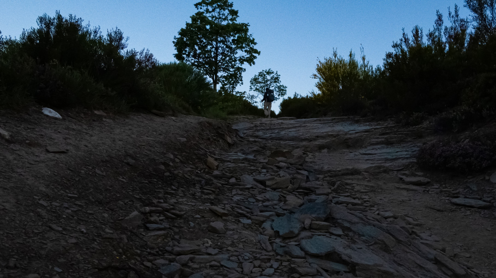
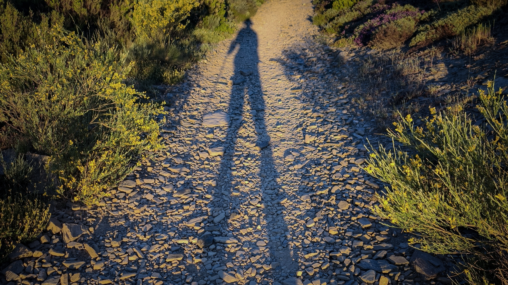
走出那段折磨人的碎石坡，清晨的霧氣還很濃，陽光從雲層裡探出頭來，灑在路面上。我們就在這片寧靜裡，一步一步順著這條光影交錯的路往前走，霧散開又聚攏，每個轉彎都像換了一個場景。
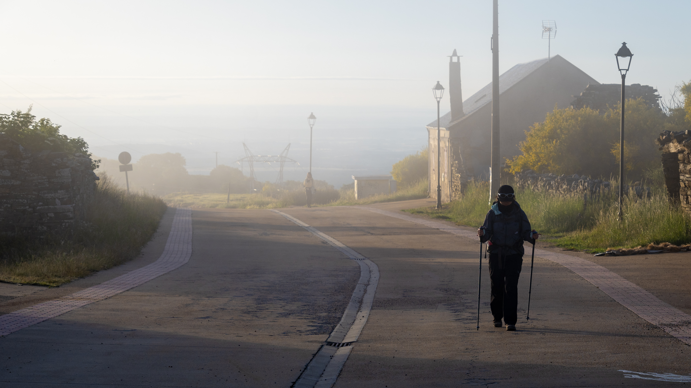
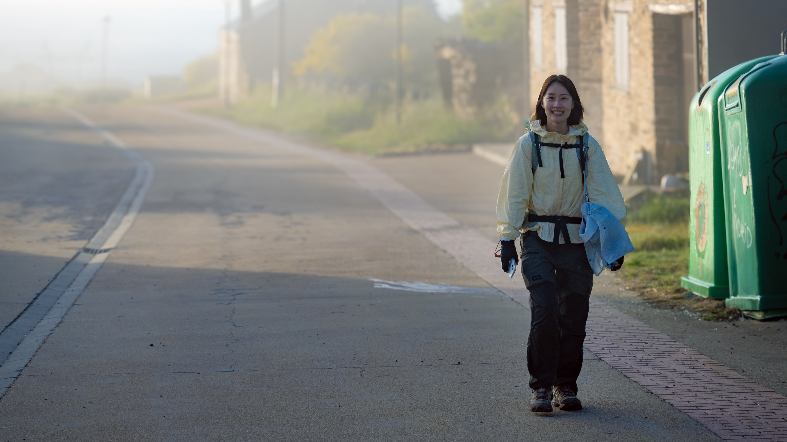
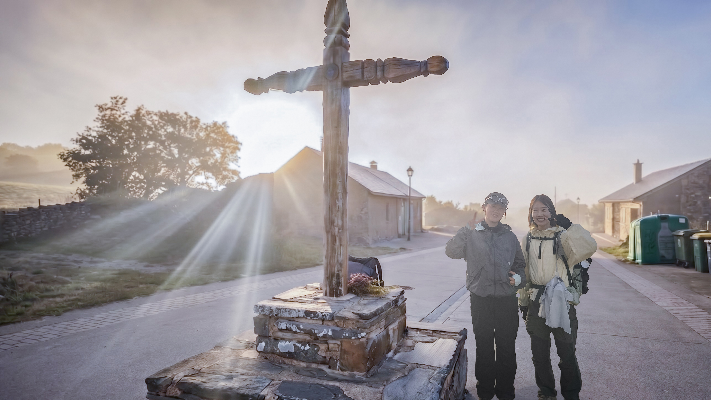
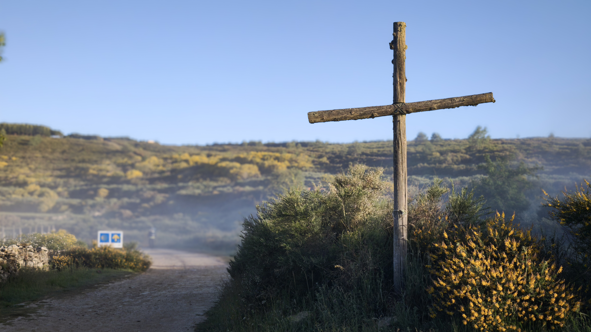
走過路邊這座安靜的木製十字架，我們繼續往高點推進。轉個身回頭望去，整片雲海正如同瀑布般安靜地漫過遠方的山頭，耀眼的陽光灑下來，這一刻整個世界都安靜了。
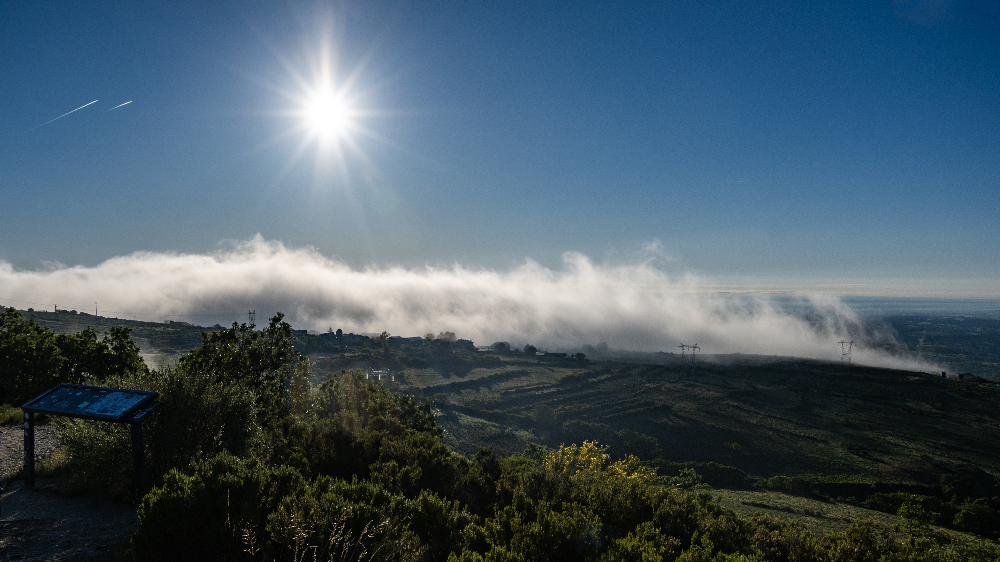
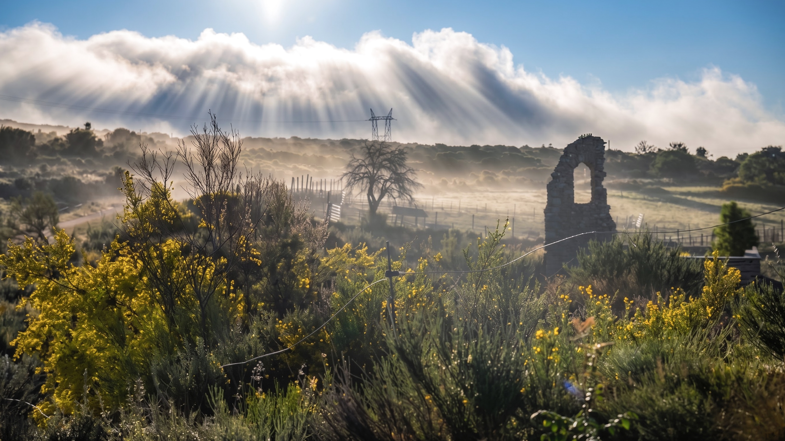
Cruz de Ferro：把石頭留下，也把重量放下
抬頭一看，濃霧裡竟然掛著一道純白色的彩虹。這不是眼花，是罕見的「霧虹」——因為水滴太小，折射不出色彩，只留下純白。能在濃霧裡撞見，氣氛真的超級魔幻，我盯著看了好久捨不得走。

終於抵達法國之路的最高點——鐵十字架（Cruz de Ferro）。這大概是我見過最安靜、最有力量的畫面，濃霧中透著一種莊嚴又平靜的氣息。幾百年來，朝聖者們都會帶著石頭跨越千山萬水，最後在這裡放下。這顆石頭，裝著每個人心裡的執念、遺憾，或是放不下的重擔。我攤開手，看著這顆寫著「Buen Camino」的石頭，其實我沒有特別想放下什麼，但當石頭輕輕放上石堆，把過去留在這片大霧之中，心裡突然有了一種說不出的輕鬆。
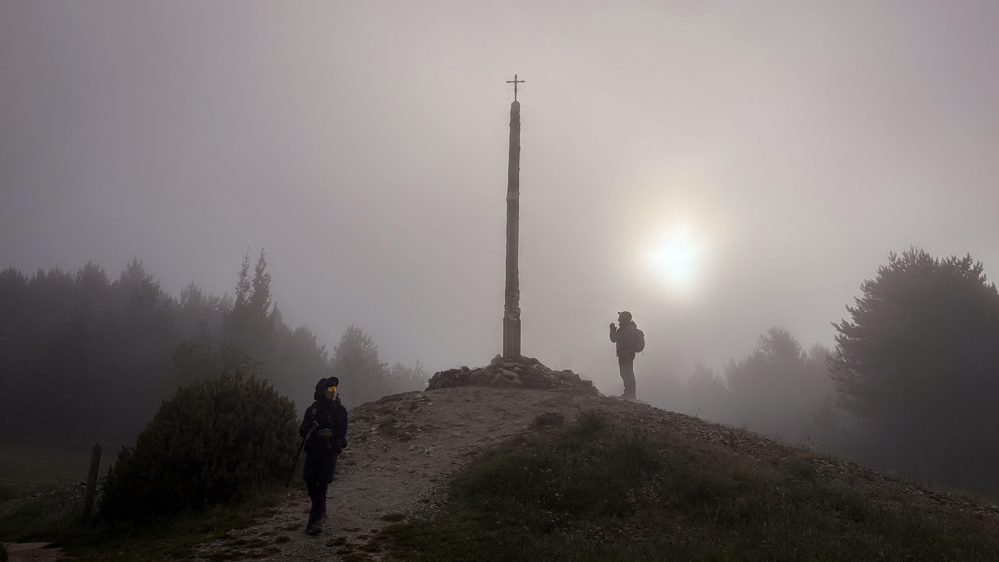
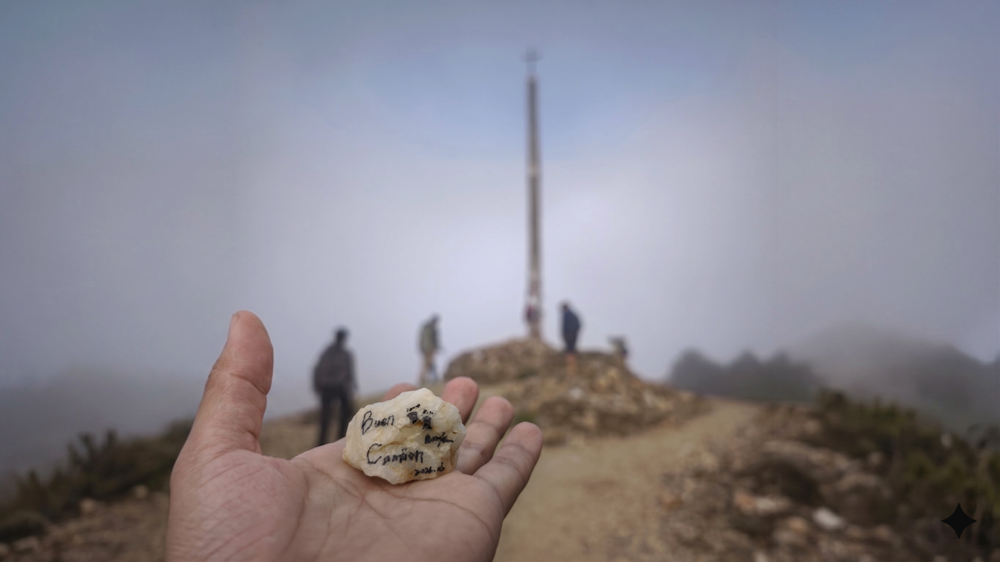
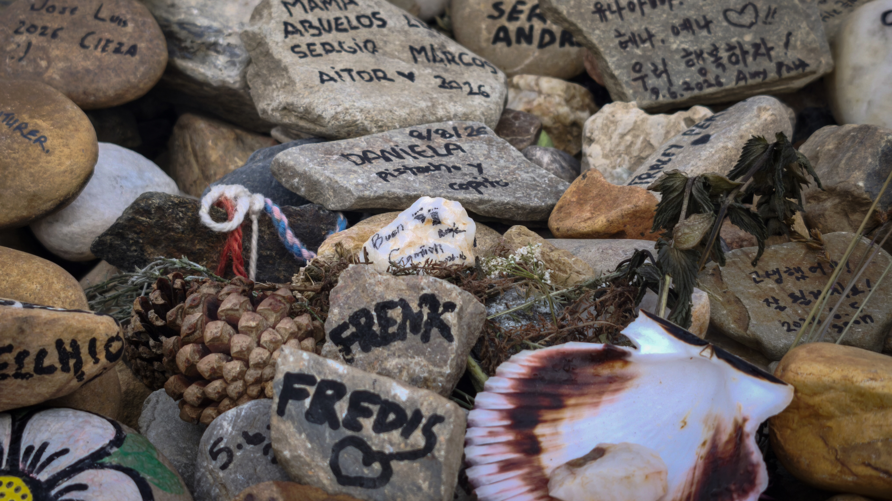
今天總里程 31 公里，爬升 641 公尺，下降卻高達 1256 公尺。光看數字你可能覺得還好，但只有真正踩在碎石坡裡的人才知道，有時候下山遠比上山還要難。我的思緒還停留在剛剛的鐵十字架——那是一根毫不華麗的木桿，底下卻是一整座由朝聖者用幾百年堆疊出來的石頭山，每一顆石頭都藏著一個人的秘密，堆滿了無數的遺憾、執念，甚至是那些我們早就該改掉的陋習。
陡下坡考驗膝蓋，Ponferrada 近了
我們總以為放下就是忘記，其實不是。放下不是否定那些已經發生的，而是承認那件事的重量已經足夠了，不需要再把它當成每天的行李。我們常常不敢放下，是因為害怕一旦失去這個重擔，自己就變得空洞，可是當你真的把手鬆開，你會發現你什麼都沒失去，你只是終於把雙手空了出來，去擁抱接下來的人生。放下石頭後轉身面對的，依然是殘酷的下山路，腳下的碎石依舊難走，身體也不會因為一個神聖的儀式就長出翅膀。
這也許就是人生最誠實的地方：放下不會讓問題立刻消失，山沒有變矮，路也沒有變平。
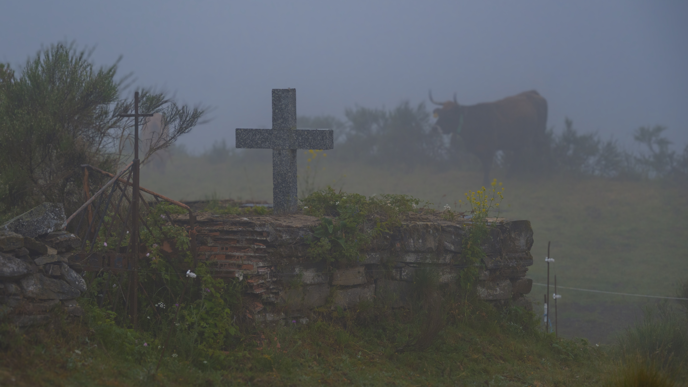
切換越野跑模式！注意踩點、順著慣性往下奔跑，迎著風，我知道心裡真的有一個地方鬆了一點，這一刻心情是愉悅的。這段連續陡降真的超硬，前面的單車騎士正小心翼翼地下坡，我則一路緊跟在後，專注踩點往下衝，這種腎上腺素狂飆的快感真的太爽了，膝蓋什麼的先擺一邊再說。
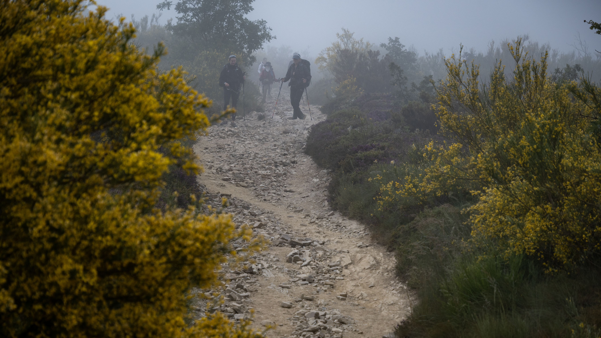
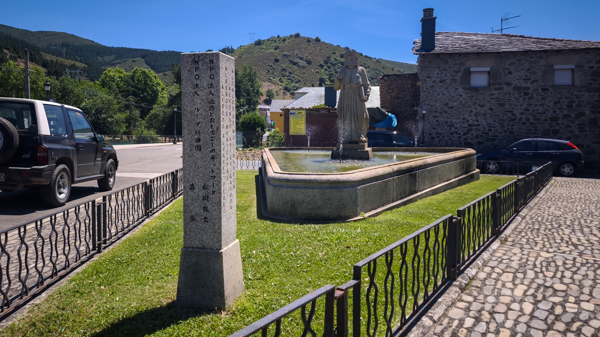
走進聖殿騎士城堡旁的夜晚
一進到這座總人口不到 20 人的迷你小鎮，路旁卻藏著這座充滿溫度的「自由捐贈」果汁攤。這份甘甜，是昨天的朝聖者為我們留下的，而我們今天放下的硬幣，將會變成明天另一位朝聖者繼續往前的力量。
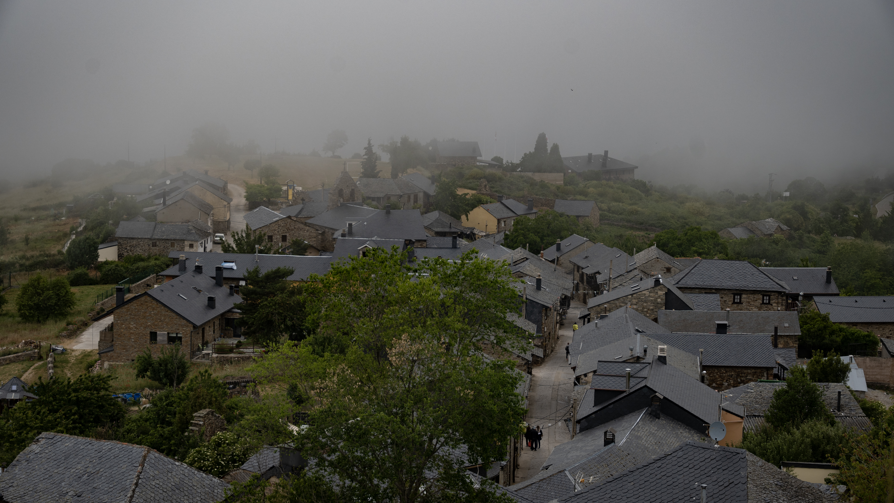
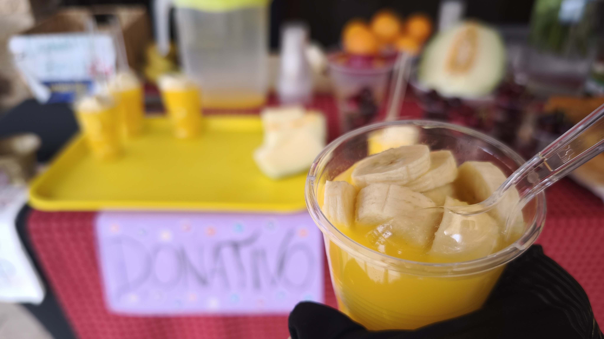
終於下山啦！入城前會先經過這座壯觀的教堂，鎮上噴泉旁邊這根石柱上面竟然寫著滿滿的日文，仔細一看，是來自日本四國遍路的友好紀念碑——在西班牙的朝聖路上遇見日本的朝聖文化，這連結也太奇妙了。
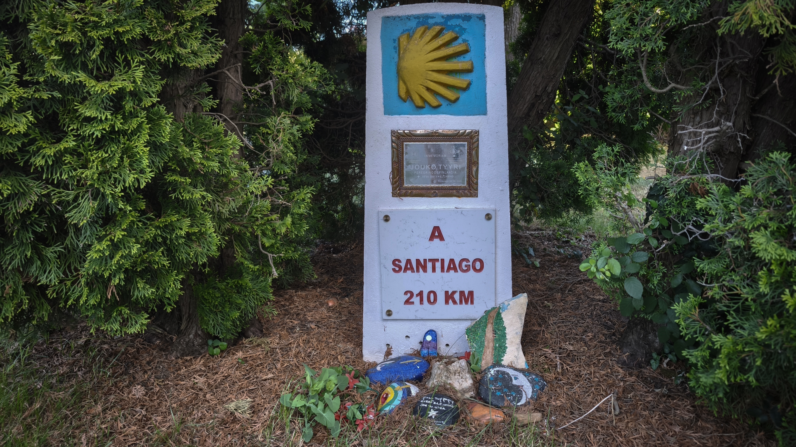
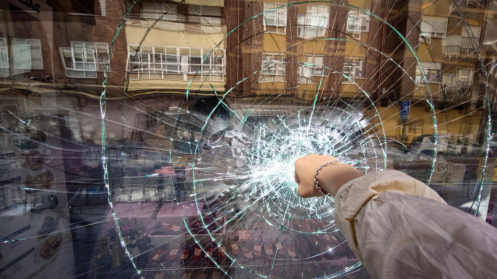
終於抵達今天的終點 Ponferrada！今晚入住這間採光超好的公立庇護所，庇護所內還有這個里程碑——距離終點聖地亞哥只剩最後 210 公里了，看到數字的瞬間真的全身起雞皮疙瘩。
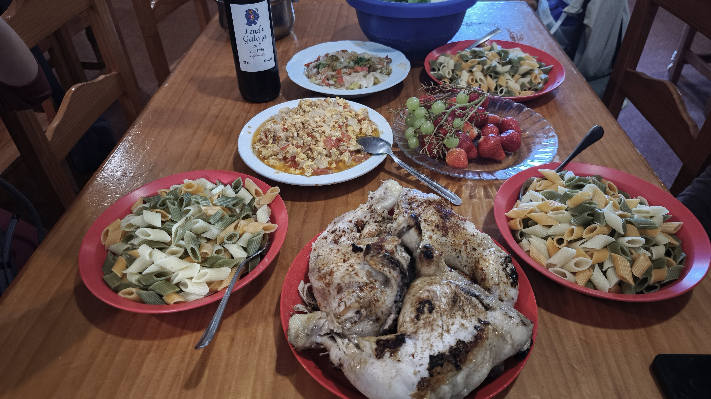
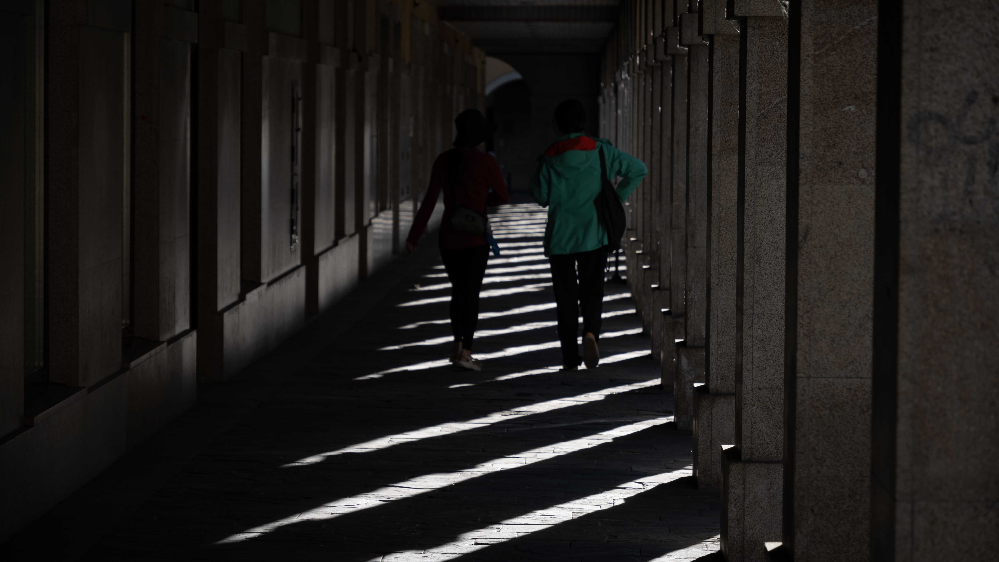
這座小鎮有著氣勢磅礡的聖殿騎士團城堡，宛如電影場景。中世紀時朝聖之路荒涼又充滿強盜，這群胸前畫著紅十字的精英騎士為了保護朝聖者，沿路修建堡壘與醫院，堪稱「朝聖者保鑣」。數百年後騎士雖已不在，雕像至今依然靜靜守護著我們，走在城牆下真的會起雞皮疙瘩。
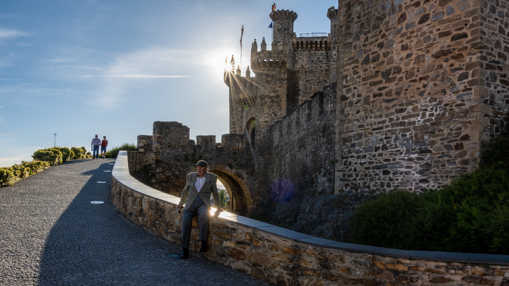
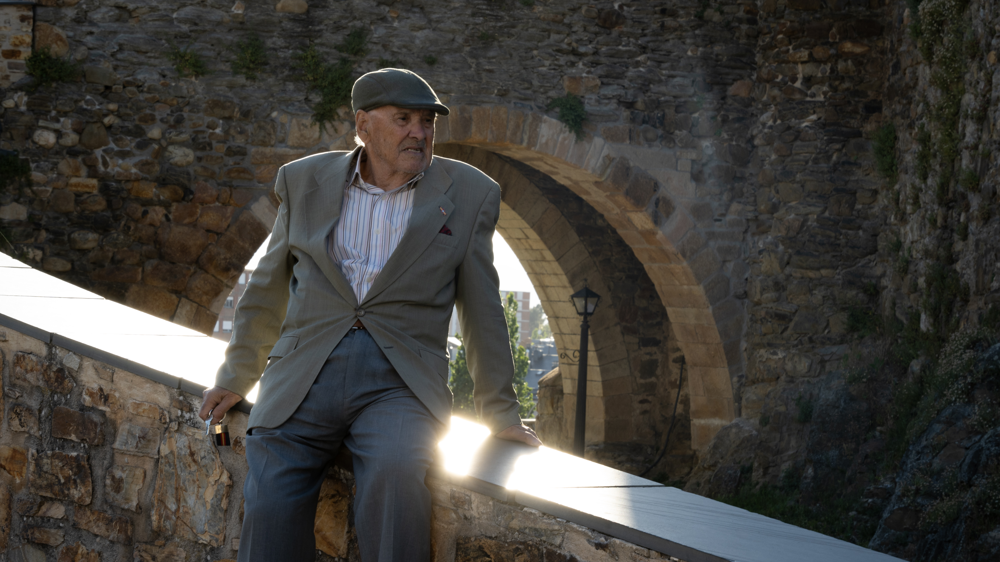
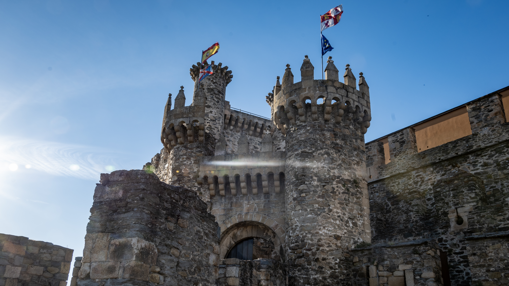
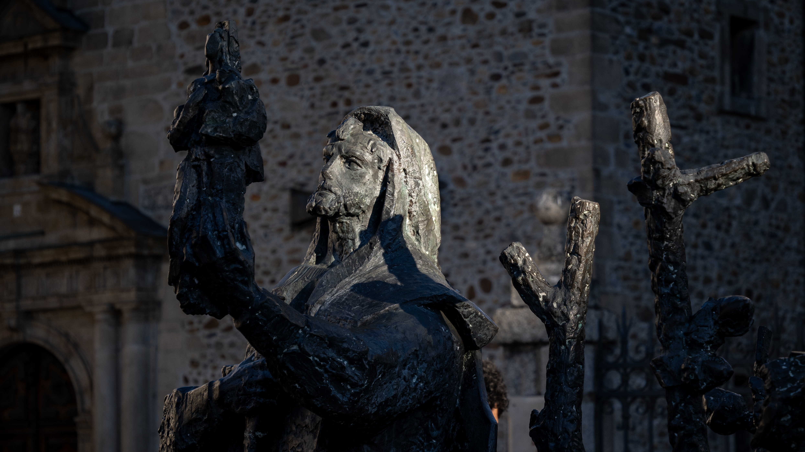
晚上自己下廚，香煎雞腿配紅酒！用滿滿的蛋白質為今天劃下完美收尾，31 公里的疲勞都在這一口肉香裡被治癒了。
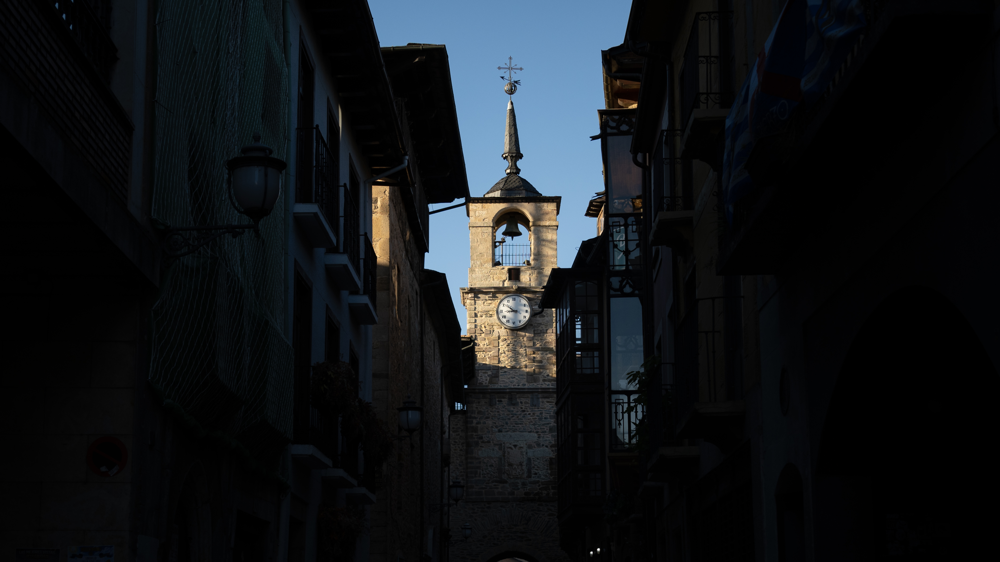
📚 朝聖者小百科：Cruz de Ferro
鐵十字架（Cruz de Ferro）是法國之路的精神最高點，位於海拔約 1500 公尺的山脊上。一根樸素的木桿頂著一枚小小的鐵十字，底下卻是幾百年來朝聖者一顆一顆堆起來的石頭山。
傳統是從家鄉帶一顆石頭來，石頭代表你的負擔、遺憾、思念，或任何想好好告別的東西。把它放在石堆上，就是把那段重量留在山上，輕輕地繼續往前走。
提醒一句：鐵十字架之後是連續碎石陡降，膝蓋殺手等級。登山杖一定要拿出來，步伐放小、側身下坡，別跟自己的膝蓋過不去。
🪨 從家鄉帶一顆石頭來，到了才發現忘了帶會很扼腕
🦵 下山比上山更傷膝蓋，登山杖＋護膝是標配
🥾 約 31km · 爬升 641m / 下降 1256m，從雲霧高點一路陡降到 Ponferrada 的一天